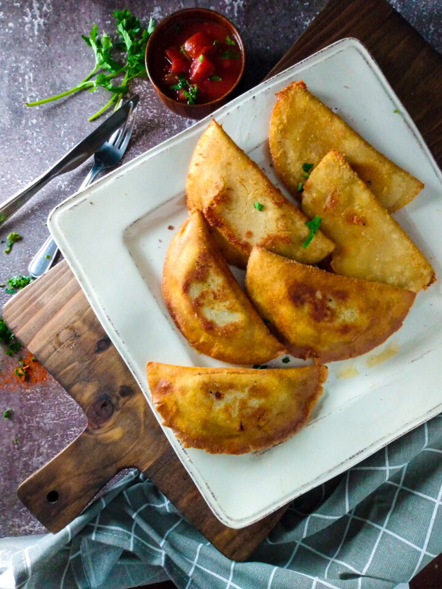

Venezuelan Empanadas

Description
Empanadas Venezolanas is a crescent-shaped pastry, made from corn flour.
It has a tender, crunchy crust with a delicious hearty mixture of ground
beef.
This easy homemade pastry is the perfect party food or the perfect
breakfast which makes you full,
and ready to start the day with full energy. Not to mention, this version
of empanadas is gluten-free.
Ingredients
- ½ cups cornmeal
- 2 tbsp all-purpose flour or cornstarch
- ¼ tsp salt
- 1½ cups water
Instructions
-
In a medium size bowl, add the cornmeal, all-purpose flour (or
cornstarch), and salt. Add the water and mix until all the ingredients
all combined, then knead well by hand until you get a soft dough, like
plasticine.
-
If the dough is too dry, add more water and if it is too runny, add more
cornmeal. Let it rest for about 10 minutes.
-
Take a portion of the dough and make a ball, and place it on the
flour-sprinkled plastic. I used a Ziploc plastic bag.
-
Spread the dough by a plate or board. Some people do it by hand. But I
prefer to spread it with a medium size plate.
-
Place a spoonful of filling in the center and fold it into a crescent
shape, with the plastic help.
-
You can use a container to shape and cut the empanada, this helps to
keep them the same size and the edges are well sealed so that the
filling does not come out.